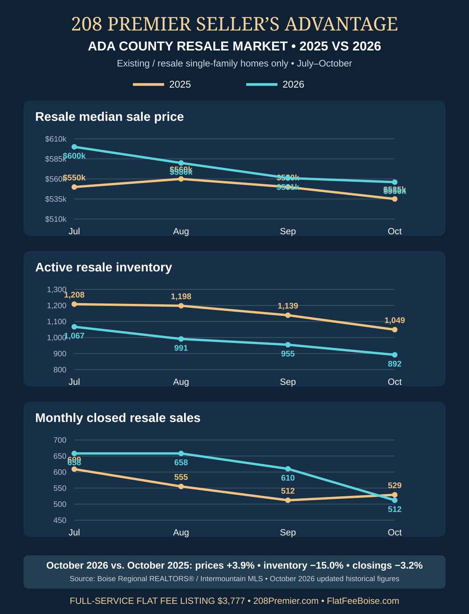
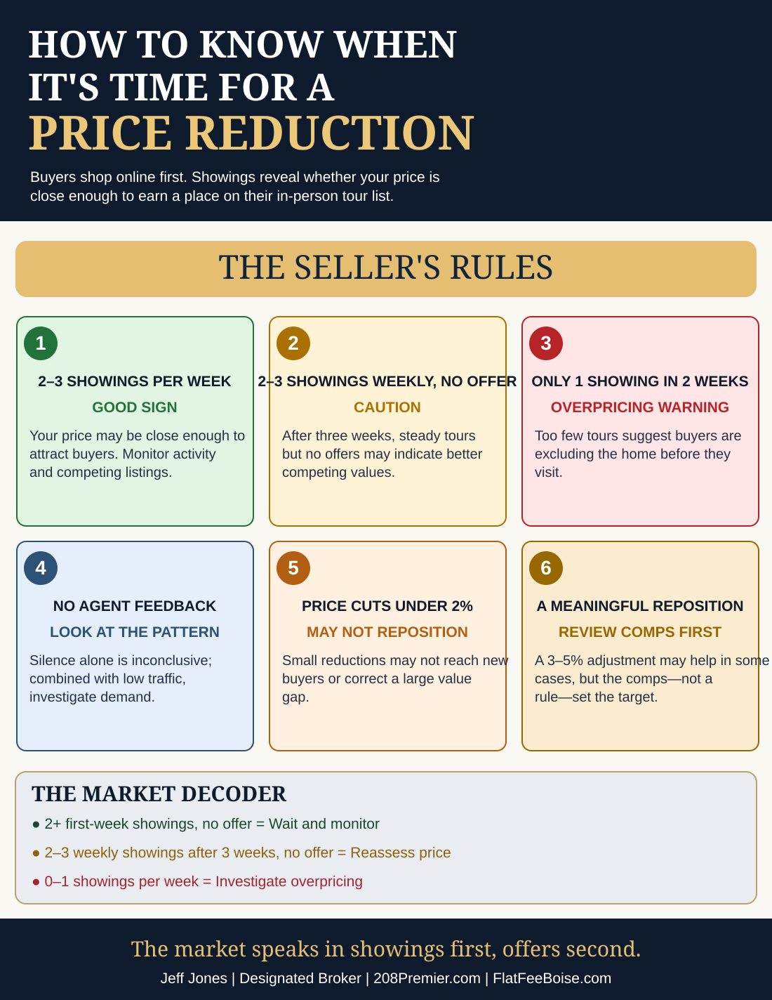

Meet Jeff Jones — Your Designated Broker →10 Years Licensed · Owner of 208 Premier Real Estate
Treasure Valley home seller guidance
208 Premier Seller’s Advantage — From the Broker’s Desk
FlatFeeBoise.com is the seller-focused website and flat-fee listing service of 208 Premier Real Estate, not a separate brokerage. These articles provide local guidance from Jeff Jones, Designated Broker and owner.

November 13, 2026 · Ada County Resale Market Report
October resale inventory fell 15.0% year over year to 892 homes, while resale closings declined only 3.2% and the median sale price rose 3.9%. See the July–October 2025 vs. 2026 charts and why fewer competing winter listings can benefit sellers.
Read the November Market ReportNovember 9, 2026 · Full-service flat fee listings
On a $600,000 sale, compare a traditional 3% listing fee with 208 Premier’s current $3,777 full-service flat listing fee—and see what is included beyond an MLS entry.
Read the Flat Fee Listing GuideOctober 31, 2026 · New seller pricing guide
Use scheduled showings, buyer feedback and comparable sales to decide when your home needs a price reduction.

Read the pricing guideFlat Fee Boise Seller Guides
Review presentation, access and competition before another week goes by.
October 29, 2026 · New seller guidance
A practical FSBO checklist for property information, appointments, privacy, follow-up and deciding what to delegate.
Read the guideWinter selling checklist